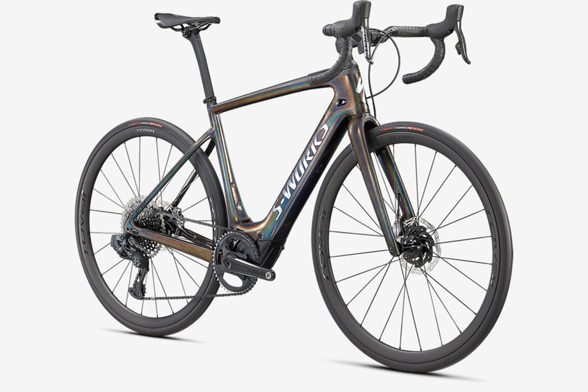

The lightest bike in its class.... It's lightweight, smooth, capable and lively, all with the power to flatten mountains, laugh at headwinds, and go farther than you ever thought possible. It's you only faster. The Turbo Creo SL Comp Carbon features Specialized's FACT 11r carbon chassis - the same one on the S-Works model and you'll also get the benefit of suspension technology with the Future Shock 2.0 and its adjustable compression. The Shimano 1 x GRX groupset takes on shifting and braking duties while DT R470 boost wheels get wrapped in 28mm Turbo Pro tyres to keep you rolling worry-free
